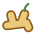
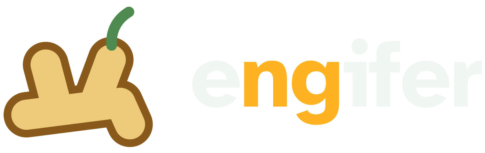

engifer logo explorations
Directions to consider, not decisions. Every wordmark is Inter SemiBold (the site's typeface) set slightly tight, so the word reads quieter than the original Atkinson Bold. Marks are shown at 64, 32 and 16 pixels on light and on the hero's emerald.
Original
The logo we started from, for reference. Heavy outline, a bold wordmark and a large mark make it read cartoonish next to the site's type.


D · Leaf for a dot
No separate mark: the dot on the i becomes a leaf. The quietest option. Would need one of the other marks (B works well) for favicons.

Keeping “ng” visible
The torch-red ng in the current logo is part of what makes it busy. Gentler ways to keep the old name in the new one:
Not marked at all
By weight: ng in SemiBold, the rest Regular
In emerald, close to the ink
In torch red, as now